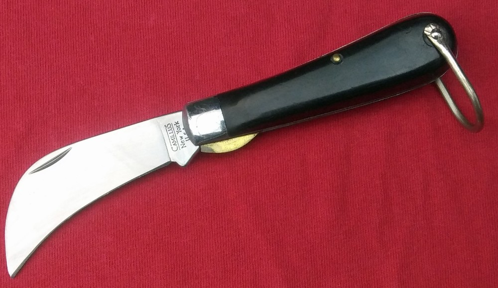
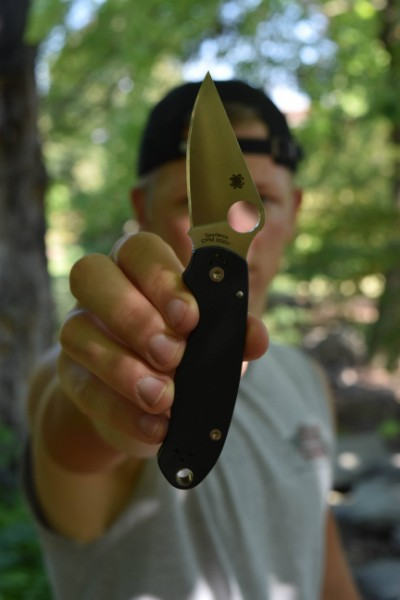

I can remember going to the local hardware store
and oogling over the glass showcase full of tacky
collector edition pocket knives. These knives were
shiny, intricately detailed with anything you can
name, and unfortunately well out of my price range.
As a kid I made my money doing work for my grandparents;
cutting brush was one of my favorite things to do
because it was hardwork and pretty fun. My brother
and I would spend the weekend at my grandparents
and earn $60 to split between the two of us. With
that money I would buy my very first pocket knife.
I can't remember the exact name but I know what it looks
like. If I remember correctly it was $20 and it quickly
became one of my favorite things that I own. As time went
on I collected more and more pocket knives and the trusty
hawk-bill shaped knife that I purchased first fell to the
way side.

It took a long time, a lot of knives, and a lot of money spent
before I could say I found the perfect knife for me. I had a
habit of buying a knife using it for a few weeks then wanting to
try something else out. I bought a pretty cool knife, a Benchmade
CLA to be exact, and had it for a month or so before I wanted to try
something new. I got in touch with a friend who wanted to trade me a
knife with some cash to make the trade fair and I took him up on the
offer. At first I was a little bummed because the Benchmade was a lot
cooler than the new knife that I got, a Spyderco Para 3. The Benchmade
was an automatic knife so it was deployed at the push of a button, where
the Para 3 was not. The Benchmade had a stronger blade with better steel,
where the Para 3 was thin and had a middle of the road steel. For some reason
the Para 3 stuck around. I got it in 2018 and it is still with me today. I
like the fact that it has a 3 inch blade making it legal to carry in most
states, I like the locking function that it has, called a compression lock,
because it allows for easy one handed opening and closing. The steel is easy
to sharpen and I can beat up the knife and not have to worry about it breaking
or losing its value, because it is my forever knife!
| Spyderco Para 3 |
| Manufacturer |
Spyderco |
| Manufacturing Location |
Golden, CO USA Earth |
| Blade Steel |
CPM S30V |
| Handle Material |
Black G10 |
| Lock Type |
Compression Lock |
| Blade Length |
3 Inches |